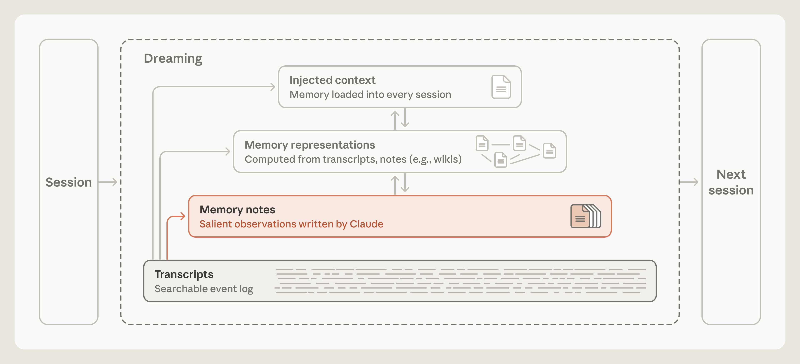
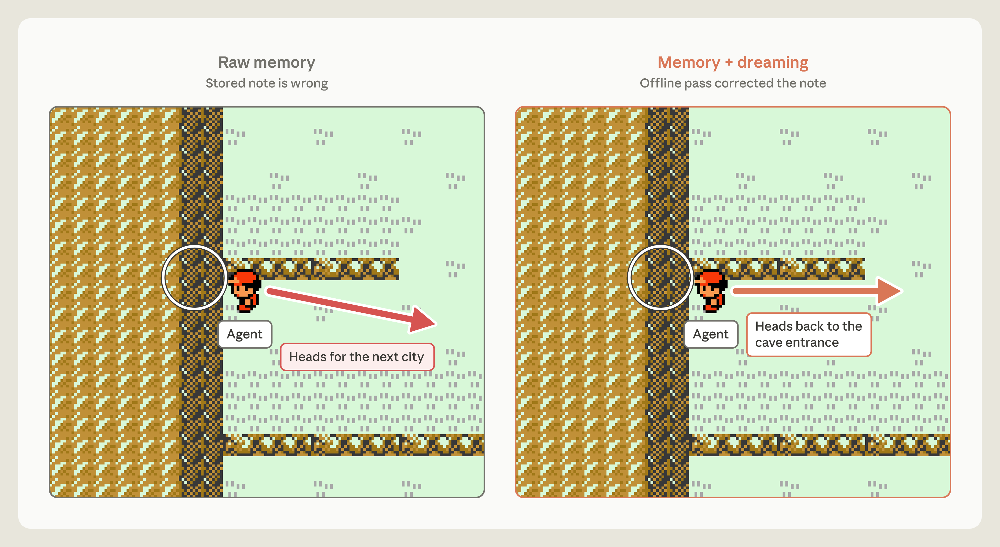
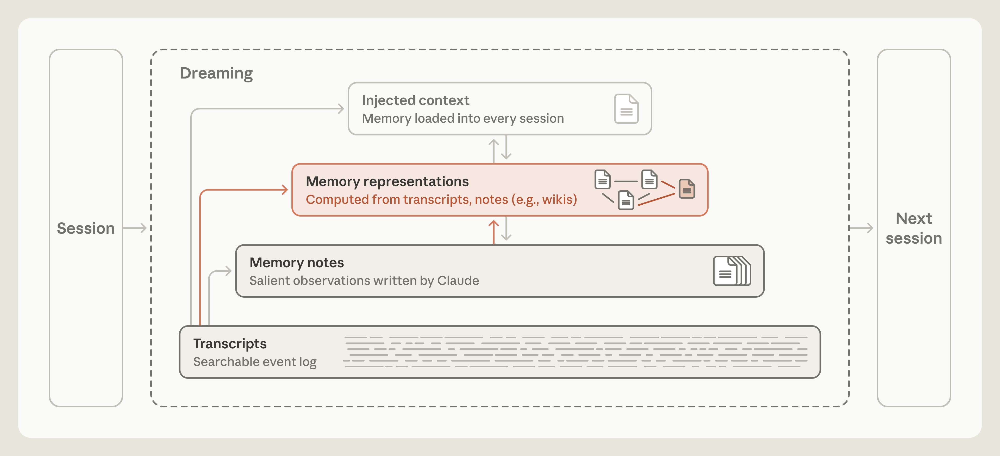
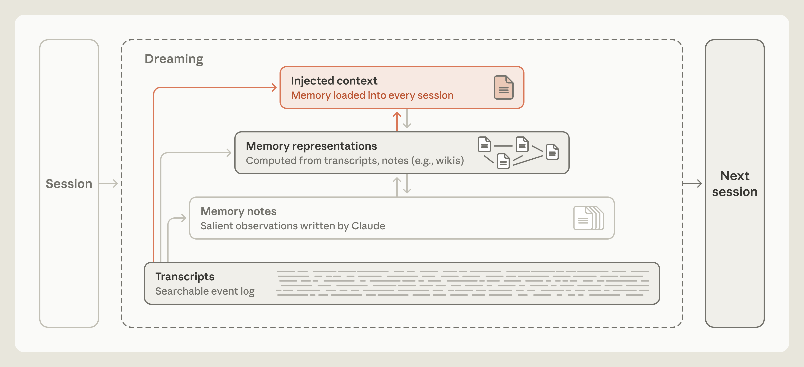
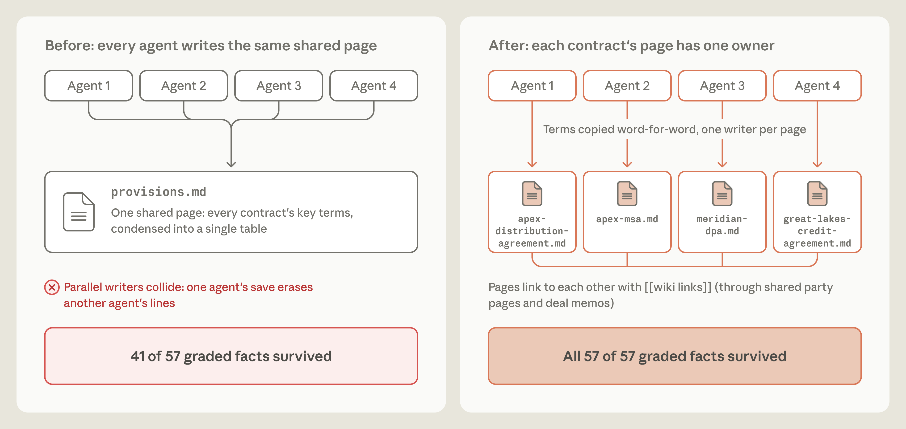

克尔凯郭尔写过：生活只能向后理解，却必须向前过。设计 AI agent 的记忆时，我们也面临类似的问题：怎样从已经发生的经历里，选出未来还会用到的内容？
人一边过日子，一边不停把记忆编码进去。海马体在这里居中：当场抓住经历，记忆很快成形、立刻能用。可只有一部分经历会巩固成长知识。
巩固很大一块发生在脑子离线的时候。睡觉时，以及安静的休息里，海马体重放最近的经历。这被当成把那些经历慢慢蒸馏、并进新皮层——我们当成「知识」的大部分，存在那里。
Agent 记忆可以用类似的分工。Agent 把很多工作记在日志或转写里。Letta 和加州大学伯克利的研究者提出 sleep-time compute：互动之间的空闲时间，用来重组已有上下文。同一想法也能帮 agent 整理记忆：对着日志反思，修错，或写出新的笔记和表示。这个过程常被叫做做梦（图 1）。

我们发现，离线整理有助于 Claude 形成有用的记忆。下面结合几项评测，介绍我们如何理解 agent 记忆，以及“做梦”怎样影响不同层次的记忆组织。
1记忆笔记
我们说的「agent 记忆」，是 Claude 从经历里拿到的知识——包括和用户的互动、派给它的任务——并且在会话之间留下来，存成它稍后能读的上下文。它不包括模型学习或管理上下文的其他办法：比如改 权重（训练时定下的内部参数）、上下文内学习（一次对话里拿到的知识）、以及 压缩（Claude 写的摘要，替换更早的轮次，好在新的上下文窗口里继续干活）。
人脑子里，经历之前、之中或之后释放的化学信号，能给一段记忆打上重要标记。打过标记的记忆，离线时更常被重放。这个过程叫 replay，帮它们稳住、并进长期记忆。
类似地，Claude 可以在会话日志里当场给显著事件打标签，稍后更好找；也可以把它们写进记忆库，比如一文件夹记忆笔记（图 2）。可 Claude 怎么在当场、还不知道下一步会发生什么时，判断什么显著？

2记忆是对未来需要什么的预测
记忆偶尔是一种预测。写下一条规则，agent 就是在预测：它描述的这个模式以后还会相关。比如写下一条核过的事实，就是预测未来某次会话里的 agent 会想靠这条事实，而不再核对一遍。时间长了，Claude 做这类预测好了很多。
看 Continual Learning Bench (CL-Bench) 1.0 里的一项任务。这个基准量 agent 用记忆去啃长程任务的能力。其中一项让 Claude 查数据库回答一串问题。Claude 给出答案之后，会被告知正确解，并可以写一条记忆，帮以后的问题。
记忆可以撑起一个学习循环。Claude 答错了，它可以记下失败，提出哪里错了的理论，去测这些理论，再把找到的变成以后怎么答的规则。
我们用 Claude Managed Agents 跑了 CL-Bench 1.0 这项任务。Claude 每个问题都从新会话开始，只有一条例外：它可以从一个记忆目录取文件，这个目录从一次会话留到下一次。
不同模型给自己造学习循环的成功程度不同。Claude Sonnet 4.6 走到了给答错提出理论。它的记忆目录里散着文件，每份列几条没测过的猜测。
Claude Opus 4.7 把笔记收成一份参考文档，开始标哪些事实核过、哪些还没确认。Claude Sonnet 5 在评分器核过之后把每个答案标成已确认，答错了就写一条更正。
Claude Opus 5 是这些模型里第一个把循环合上的。它大多数条目里有一条规则（以及它怎么知道这条规则是真的）、更早问题的答案、以及一路发现的陷阱的清楚警告（图 3）。

和 Opus 5 一样，Claude Opus 5.5 和 Claude Sonnet 5.5 都把循环合上了，用记忆抓住关于怎样最好地回答未来问题的、核过的规则。有记忆时，两者分数和 Opus 5 差不多，尽管没有记忆时的基线略高。
3Claude 怎样判断哪些经历值得记录
我们也评了 Claude 玩 Pokémon Red 的能力。这游戏逼 Claude 走复杂的长程任务，用来测 Claude 对「什么该存进记忆」的判断。每次开跑，我们给每个模型一文件夹记忆文件，玩的时候可读可写（图 4）。

我们比较了 Claude Sonnet 3.7 和 Claude Fable 5 各一次跑、大约进到游戏第 10,000 步时的记忆文件夹。一个关键差别是：每个模型觉得什么值得记住。Sonnet 3.7 假定什么都可能要紧，不加挑选地往记忆里写。它的记忆文件夹是一份遭遇档案，常常每场战斗、每件找到的物品、每个碰到的非玩家角色各一份文件。最终 Sonnet 3.7 在 225 个文件夹里写了 413 个记忆文件，拿到 1 枚徽章（徽章标记玩家在游戏里的进度）。
Fable 5 对照之下，在两个文件夹里写了 9 个文件，外加一份顶层的 global.md，拿到 4 枚徽章。
Sonnet 3.7 的做法成问题，主要因为宝可梦的游戏状态不停在变——它那份细账一直在过时。于是 Claude 往前走时，越来越多时间和资源花在翻记忆上，而不是玩游戏。大约第 10,000 步，Sonnet 3.7 开了第四个「总」记忆文件夹。接下来 17 步里，它建了 6 个文件、删了 9 个，游戏里一步都没走。
Fable 5 的做法，把记忆用在游戏没有明说的东西上。Sonnet 3.7 写进记忆的某些信息——比如玩家有多少钱、地图上在哪——每回合都能从屏幕读到，存下来是重复。对照之下，关于策略、计划、测过的规则的记忆文件，只有 Claude 自己想出来才存在，不写下来就会没。
Fable 5 按这个来组织记忆。它的 global.md 当看板：当前目标、一份预先写好的攻道馆计划（徽章在那里赢）、以及模型自己用记忆的规则。locations 文件夹里是走特定路线的计划，gameplay 文件夹里是根据它对游戏怎么运转的理解写出的策略。比如连续 7 个精灵球都抓不住一条鲤鱼王（最好抓的宝可梦之一）之后，Claude 写道：「如果连续 3 个球以上失败，就变化时机（在菜单步骤之间插入额外的『等待』按键）——抓到就是刚这么做之后。」
记忆文件夹小得多，Fable 5 在游戏里走得比 Sonnet 3.7 远得多。Opus 5.5 做法类似：它留一小文件夹记忆笔记，跟踪当前目标和下一步，边玩边改写，通关了。
4怎样把 Claude 推向写记忆
我们发现，告诉 Claude 记忆是干什么的有帮助，但不要告诉它怎么用。在 CL-Bench 上，我们只告诉 Claude 有一个记忆文件夹可用。这点一般指导，就够 Opus 4.7 和 Opus 5 有效地用记忆，两边的表现都有明显抬升（图 3）。
我们也测过给模型定具体规则，规定该往记忆里写什么，每次测一条规则。我们比较：有这条规则时记忆带来的增益，对没有这条规则时的增益。规则设成「只记失败」时，Opus 5 和 Opus 4.7 都丢掉记忆给它们的很大一块表现抬升（图 5，右）。对更强的模型，让它们自己判显著，比事先定死规则更有效，那些规则最后可能把表现弄弱。

我们也注意到，这种推动对更老的模型帮助最大。比如 Sonnet 4.6 常常不读记忆目录里的文件，也测不成它关于答错原因的理论。
这种情况下，提示 Claude 答之前先读记忆文件——然后再显式测它的理论——几乎把基准分数翻了一倍（图 5，左）。Sonnet 5 自己就会做。没人提示，它 10 次里有 9 次答之前读记忆。对照之下，Sonnet 4.6 不到一半时候这样做。
对前沿 Claude 模型，我们通常给简单指导：有人要求时，或有什么明显值得记住时，就建记忆笔记；判断留给 Claude。
5做梦能改记忆
Claude 按它在会话里判成显著的东西往记忆里写，所以一条一开始就错的笔记，或环境变了之后漂走的笔记，可能被以后会话里的 Claude 读到、并信。
做梦给 Claude 一条路，对着原始转写测它的笔记（图 6）。我们看到过正面例子：Claude 用 Managed Agents 玩宝可梦，记忆挂在一个挂载目录上。

游戏里有一段，玩家必须穿过月见山：洞穴系统，入口在地图西边，出口在东边。入口附近有一个陷阱：单向岩架，把玩家掉回刚来的那条路，没有明显的路爬回去。Claude 把宝可梦中心——山入口的一栋建筑——当地标，所以它会不会走下岩架，取决于它以为宝可梦中心在山的哪一边。
有一次，Claude 写下（写错了）宝可梦中心在东边。它从宝可梦中心走出来，宣布「月见山在我后面了」，并更新笔记：「月见山 DONE。」可月见山并不在它后面。几步之后，Claude 走下岩架，掉回刚来的那条路（图 7）。它的导航工具没显示这次下落，于是 Claude 下结论：「我往西冲过头了」，并且一直都在正确的那一边。它没有。

然后我们测：做梦能不能帮 Claude 躲开这个陷阱。我们在含有宝可梦中心错误位置的记忆文件夹上跑做梦：Claude 对着会话转写核这条笔记，抓住错误，改写了它。转写给了 Claude 一个可用来核记忆的地面真值。有了改过的记忆笔记，Claude 直接走回月见山，最后到了华蓝市。
未改笔记的那次跑，Claude 三次掉回更早的那条路。第三次失败之后，Claude 像是放弃了，写道：「我要停下来，而不是继续转圈。」我们这套设置的自动回复指示它继续。于是它继续，一路回到月见山前的尼比市，想在那里治疗、补货。这次跑结束时，Claude 从未到过华蓝市。

6做梦能建新的记忆表示
有了做梦，Claude 可以建表示，帮它在记忆里走（图 9）。它用的一种记忆表示叫 wiki：Claude 写、Claude 维护的一组页面，把 Claude 对一个主题知道的收在一起，链到其他笔记。这些链接等于给 Claude 一张图，用来筛记忆、在需要时有效定位。

wiki 这类表示能帮 Claude 走它越长越大的知识库。我们用一套内部文档语料探 wiki 作为记忆表示的好处——大约 350,000 个文件，大约 4.2 亿 token——来自我们 5 月收购的软件公司 Stainless。我们做了 25 道关于这套语料的题，给 Claude 一个搜索工具去探。我们也指示 Claude 用做梦基于这些文件建一份 wiki。128 次会话里，我们提示 Opus 5 agent 去探文件、写或改正有链接的 wiki 页、合并重复、对着来源核主张。
每次会话叠在先前会话的进度上，用一份共享日志来协调。做梦从两次会话扩到 128 次时，25 道题上的表现从评分标准的 13% 长到 48%（图 10）。

Claude 一点一点建 wiki。先有一份初始 wiki，再用后续几轮做梦去加、改、或剪。做梦早期，Claude 的知识和新员工差不多，只靠 wiki 答题的能力有限。它做得越多，知识图越密，像资深员工。测试里我们发现，wiki 帮 Claude 最多的时候，是我们同时给它搜索工具。搜索和 wiki 一起用时，随着 wiki 长大，合计分数从 54% 升到 61%；只有搜索工具时是 53%。Claude 只用 wiki 答题时最好分数是 48%。搜索加 wiki 也大约每题省 20,000 token。
我们想测哪类任务会因为 Claude 有一份 wiki 而受益。于是用 Harvey LAB 基准，外加一套关于一次并购的文档。基准给 Claude 一套文档，让它按内容生成一份法律意见书，再按一列标准给这份意见书打分。也许不如一次宝可梦跑那么好看，但这些评测给我们多样的文档集，好从里面建 wiki。
我们指示 Claude 从文档建一份 wiki。然后让 Claude 答题（关于并购）或生成法律意见书（LAB 基准），既从 wiki，也从直接文件搜索。一项测试问了 24 道关于并购的题（图 11，左），一半以上需要 Claude 跨几份文档找信息，许多还需要判断或做数学。那些条目上（红线和橙线），Claude 查 wiki 时得 87%，只用搜索时得 73%。

另一些情况下 wiki 没那么有用。一项 LAB 任务（图 11，右）里，意见书标准常常能从单份文档用文本搜索拿到，wiki 相对搜索没有清楚的表现增益。另一项 LAB 任务里，wiki 长得比文档本身还大（图 12）。像博尔赫斯那篇一段的短篇《论科学的精确性》里的制图人：画出一张细到和它所代表的帝国一样大的地图，Claude 做了一份极细的 wiki，等于什么也没抽象。

7离线整理能调整笔记的存放层级
做梦也能把笔记浮到记忆层级顶上，agent harness 可以在每次会话开头预先把它们加载进 Claude 的上下文（图 13）。这意味着 Claude 不必去搜它们，甚至不必知道有什么可搜。

把记忆抬进新会话（一种 上下文注入）必须小心。注入的记忆吃掉值钱的 token，一条错笔记会带进每一次会话。加载一条笔记也不保证 Claude 按它做：我们关于 Claude Code 的文档警告，更长的说明文件会降低遵守。所以记忆层级的顶层必须相对小，做梦在这里的很多工作就是把它维持成那样——把一些细节往下挪，留下链接。
Claude Code 的自动记忆用同样办法把注入层维持得小，由 Claude 在会话里维护。Claude 不会把全部自动记忆加载进每次会话的上下文窗口。它只加载 MEMORY.md 的前 200 行或 25 KB。这段头当索引，给 Claude 看它知道什么、去哪找。
8做梦能把记忆对准一个目标
做梦也能塑造记忆怎样长。像 Claude Duet 这样的助手，常常受益于记忆围着它在帮的那个人来组织；做梦可以调成围着一个特定目标建记忆。
指导记忆怎样长的说明随任务不同，告诉 Claude 什么信息真要紧。比如 LAB 基准里有一项模拟公司收购，提供一套合同。意见书按它是否正确描述合同条款来打分。
我们从生成 wiki 的基本说明开始，没告诉 Claude 怎样用这份 wiki。这项任务很依赖合同条款。wiki 在建的时候，几个 agent 同时往一张共享的合同条款表里写（图 14，左）。

结果是一份缺关键事实的 wiki。我们给从这份 wiki 生成的意见书打分时，Claude 只收进 57 条事实里的 41 条（72%）。去看哪里错了，发现共享表把合同条款总结得很差，有些整条缺失，因为 agent 互相覆盖了对方的活。
合同条款是 wiki 里最要紧的部分，说明却没这么写。为了找到更好的说明，我们跑了一个循环：Claude 对着失败反思，提出对说明的改动，再重建 wiki。这个循环让 Claude 发现跟着合同条款有多要紧，于是它按这个改写了建 wiki 的说明。
每份合同在 wiki 里有自己的一页，由单个 agent 写，条款原文照录，而不是总结进一张共享表。我们给从这份改进过的 wiki 生成的意见书打分时，100% 的标准能满足，从 72% 上来。
9离线整理能补充会话中遗漏的内容
Claude 写记忆笔记时，它只看见那一次会话里的上下文。做梦可以跨许多会话搜，找共同模式，或改正共同错误。
给 LAB 基准建 wiki 时（例如图 14），有时 Claude 会链到还没建出来的页。第二遍离线整理修复了其中许多失效链接。一项任务上（图 15），做梦在 wiki 里找到 9 条链到缺失页的链接，把它们改指到同一份文档已有的页。它也加了 3 个新页，包括一份索引，用来改善这份 wiki。

10往后想，往前看
怎样给 agent 设计记忆系统，还有很多没关上的问题。一个是 Claude 该什么时候建记忆。Claude 在一项任务上干活时，可以往记忆库（文件夹、文件或数据库）里写，在源头抓住显著，让重要细节立刻能给以后的轮次或会话用。可当场记笔记，不可避免把 Claude 的注意力从主任务上拉开。对照之下，做梦可以把建记忆推到后台，可做梦的任何输出对 Claude 可能不是立刻能拿到。
另一个问题是怎样让记忆可靠地跟上。Claude 可能做出错误预测，或一开始就把错规则写进记忆。记忆也可能漂走，环境变了就不再相关。做梦是改这些错的一条路（图 8），可它要算力。指示 Claude 持续核全部记忆可能不实际。也许更要紧的是把做梦对准可能变的信息，或仔细调做梦的节奏（比如按记忆被访问的频率）。
把转写搜索当成 Claude 记忆的底座，也说得通。把表示（比如 wiki）和搜索合在一起（图 10）有时有效。可 Claude 需要用算力去维护记忆表示，并确保它们不堆积错误或幻觉。
即便 Claude 对显著的判断变好了，也没有哪个模型真能知道以后的轮次会发生什么。做梦给 Claude 一个机会往后看，用算力整理记忆、改错、维护表示，让未来会话更容易拿到记忆。Claude 更强时，记忆系统还会变。关于怎样设计 Claude 的记忆系统，我们还有很多要学。
11出处
这篇是译文。原文 Anthropic，The components of agent memory，2026-11-06。图 1 到图 15 来自原文。
Sonnet 3.7 的 413 个文件、1 枚徽章，对 Fable 5 的 9 个文件、4 枚徽章；wiki 从 13% 到 48%；搜索加 wiki 61% 对只用搜索 53%；并购题 87% 对 73%；合同 wiki 72% 到 100%，都按原文转述。CL-Bench 图上的精确柱高我没有从像素读回。我没有复现这些评测。